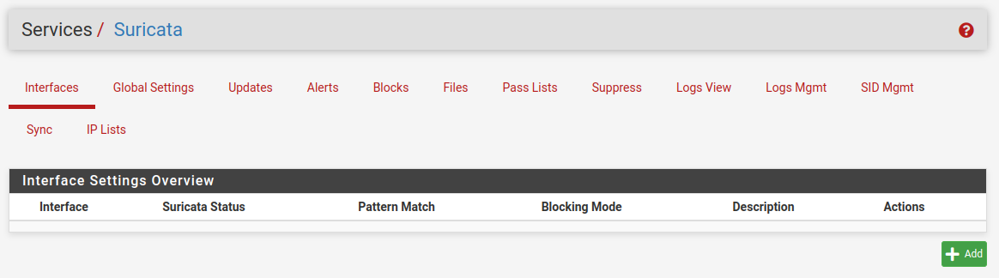

Laboratorio 1. Suricata en PFsense
1. Introducción
En este laboratorio, se va instalar Suricata en PFsense para que posteriormente, se envíen las alertas a Wazuh o Graylog.
Recursos necesarios y escenarios posibles
1. Máquinas virtuales en VirtualBox, KVM o VMWare Player:
- Máquina virtual con pfsense y Máquina virtual ubuntu server con GrayLog o Wazuh. En el siguiente enlace, se describe el proceso de instalación de GrayLog en Ubuntu Server. Para ubuntu 20.04: https://howtoforge.es/instalar-y-configurar-el-servidor-de-monitorizacion-de-graylog-ubuntu-20-04/
2. Proyecto en Gns3 con los appliances: Pfsense, switch, firefox, Toolbox y Kali. El esquema es el siguiente:
Referencias:
- https://tech.lobobrothers.com/implementando-pfsense-con-suricata/
- https://tech.lobobrothers.com/configurando-suricata/
2. Instalación de Suricata en pfSense
Fuente: https://tech.lobobrothers.com/implementando-pfsense-con-suricata/
Con el comando pfctl -d en PfSense, deshabilitamos temporalmente las reglas de firewall para acceder al navegador desde la ip de la wan.
Otra forma de conseguir acceder a pfSense por el puerto WAN es añadir una regla que permita el acceso al firewall desde cualquier equipo en la red WAN.
Para añadir la regla, hay que pulsar en Guardar y luego en Aplicar.
A continuación, hay que ejecutar de nuevo en la consola el comando pfctl -d, ya que por defecto en la Wan están denegadas las redes privadas y se colocan en primera posición sin poder ser movidas (ver figura superior), por lo tanto, tendremos que desactivar esta opción en Interfaces/WAN abajo del todo quedando ambas casillas desactivadas, para ello, hay que pulsar en la rueda dentada de la sección Actions de una de las reglas y desactivar las opciones (ver imagen inferior). Otra forma de desactivarlo es desde Interfaces > WAN y en la parte inferior, desactivar las 2 opciones.
Una vez se pulsa en Save, ya sólo tendremos la regla que permite la conectividad desde la WAN.
Esto es un laboratorio, no hagáis esto en Producción, utilizar VPN para acceder o permitir sólo ips fijas si disponéis desde donde os conectáis remotamente
1. Instalar el paquete Suricata
Lo primero es dirigirnos a System > Package Manager > Available Packages. En el buscador ponemos suricata y nos aparecerá el paquete de Suricata, a la derecha le damos al botón verde de Install.
Para confirmar la instalación le damos a Confirm.
Al pulsar 'Confirm', comienza el proceso.
Tras instalarse, podremos acceder al servicio desde Services > Suricata.

2. Configurar interfaz a proteger
En primer lugar hay que modificar el fichero/usr/local/etc/suricata/suricata.yaml para añadir la home net (LAN) que para este caso es: 192.168.100.0/24.
A continuación, hay que ir a Services > Suricata > Interfaces, para añadir la interfaz que se desea proteger y pulsar el botón verde de Add. En la parte de LAN Settings es donde seleccionaremos la interfaz que vamos a usar, que para este caso es la LAN (em1).
En la sección de logs activaremos la primera opción para enviar los logs al firewall.
La siguiente sección es muy interesante si se tiene un sistema ELK o un Wazuh, para enviar la información en formato JSON. Si no es el caso, se deja desactivada. Para nuestro caso, se activa ya que se enviarán los eventos a Wazuh.
Sin la siguiente sección únicamente lo que haríamos es generar logs pero lo que queremos es bloquear, por lo tanto, habilitamos la opción para que los hosts que generen una alerta en Suricata sean bloqueados.
Continuamos con la siguiente sección, donde las opciones por defecto trabajan muy bien para la mayoría de los casos.
En la siguiente sección, veremos qué redes queremos proteger, la opción predeterminada puede servir perfectamente, pero si hay redes que el firewall no puede ver, se puede crear un Pass List en Services > Suricata > Pass Lists con esas redes y seleccionar dicha lista en cada apartado en función del tipo de red. Además, se puede crear otra lista para evitar que las IPs sean bloquedas y así no haya una interrupción en la conexión.
Para crear un PasslList, hacemos:
Acceder a: Services -> Suricata -> Pass List y pulsar 'Add'. Rellenamos el nombre, la descripción, la dirección de red y pulsamos 'Save'.
Recordamos las direcciones de red de las interfaces LAN y WAN para este caso de ejemplo:
A continuación, hay que añadir el Passlist en Services -> Suricata -> LAN - Interface Settings > Network Suricata Should Inspect and Protect > Home Net.
Creamos otro alias para la externa (WAN) del mismo modo que hemos realizado la anterior, quedando de la siguiente manera (red WAN 192.168.122.0).
A continuación, hay que añadir el Passlist en Services -> Suricata -> LAN - Interface Settings > Network Suricata Should Inspect and Protect > External Net.
En esta sección crearíamos una Suppress List en Service > Suricata > Suppress donde en lugar de poner IPs añadiríamos filtros para que no se ejecutasen.
Por último, tenemos esta sección por si queremos modificar la configuración de Suricata añadiendo los parámetros línea por línea. Una vez configurado todo, pulsamos en Save.
Referencia:
3. Configuración Global
A continuación, hay que ir a Services > Suricata > Global Settings. En este apartado lo primero que encontramos son las reglas, en este caso utilizaremos las reglas Free. Después en el paquete de reglas es muy importante no poner la versión 3 ya que no es compatible. Además, necesitamos un Oinkode (claves únicas asociadas a una cuenta de usuario) que se puede encontrar en snort.org al registrarnos. Para este caso de ejemplo, el Oinkode es: c2ac21bd537e0dfc213fb6bd5d94242da9ee8c0a.
Configuramos las siguientes secciones:
El siguiente apartado es para seleccionar cada cuanto se actualizan las reglas. En este caso de ejemplo, se elige cada 6 horas. Después, activaremos el GeoLite2 para geolocalizar las direcciones IP. Para ello tenemos que registrarnos en MaxMind (https://www.maxmind.com/en/geolite2/signup) y pegar el código que nos salga una vez registrados en el recuadro del pfSense.
Vídeo 1. Generar key MaxMind.
Por último en el apartado de 'General Settings', tenemos el intervalo de tiempo para borrar la lista de IP bloqueadas, dónde copiamos los logs y si preservamos los ajustes en caso de desinstalar el paquete. Por último, le damos a Save.
Una vez guardado nos vamos a Services > Suricata > Updates. Le daremos abajo a Update y se irán instalando los paquetes. Finalmente, deberá quedar así.
Luego en el apartado de Alerts nos mostrará las alertas que se generan y el por qué.
En Blocks se pueden consultar las IP bloqueadas.
Pass Lists es para crear una lista de direcciones IP que no queremos que se bloqueen nunca.
La sección de Logs View es para ver los logs que se han ido creando.
La sección de Logs Mgmt es para configurar el tamaño de los logs o lo que deben durar, al final esto es a gusto de cada uno.
Por último, el apartado de IP Lists lo dejaremos desactivado.
Llegados a este punto, tendríamos Suricata configurado. Ahora tenemos que ver cómo enviar las alertas a Graylog.
3. Reglas personalizadas
Hay que modificar la directiva HOME_NET que se encuentra en el fichero /usr/lib/etc/suricata/suricata.yaml con la dirección de red que se le haya asignado a la red LAN, para este caso, es la 192.168.100.0/24.
Todas pasan de 1.000.000 (números libres para reglas personalizadas).
- alert tcp any any -> any 3389 (msg:"Bastionado IES Caminàs - Remote Desktop, Potencial CVE-2019-0708"; classtype:protocol-command-decode; sid:1000001;rev:1;)
- alert icmp $HOME_NET any -> 192.168.1.1 any (msg:"Ping stalker detected"; icode:0; itype:8; threshold: type threshold, track by_src, count 30,seconds 180; classtype:attempted-recon; sid:9166682; rev:1;)
- drop ip any any -> any any (msg:"DATA LEAK Plaintext name detected"; content:"Caminas"; nocase; pcre:"/(Fulano.*|Fulanito.*|fulano.*)/i";classtype:attempted-recon; sid:9166600; rev:1;)
- alert udp any any -> any 53 (msg:"SURICATA DNS Query to a Suspicious *.ws Domain"; content:"|01 00 00 01 00 00 00 00 00 00|"; depth:10; offset:2;content:"|02|ws|00|"; nocase; sid:2500003; rev:1;)
- alert http any any -> any any (msg:"SURICATA HTTP Request to a Suspicious *.ws Domain"; flow:established,to_server; content:".ws"; http_host;isdataat:!1,relative; sid:2500004; rev:1;)
- alert udp any any -> any 53 (msg:"SURICATA DNS Query to a Suspicious *.to Domain"; content:"|01 00 00 01 00 00 00 00 00 00|"; depth:10; offset:2;content:"|02|to|00|"; nocase; sid:2500005; rev:1;)
- alert http any any -> any any (msg:"SURICATA HTTP Request to a Suspicious *.to Domain"; flow:established,to_server; content:".to"; http_host;isdataat:!1,relative; sid:2500006; rev:1;)
- alert http any any -> any any (msg:"SURICATA HTTP Request to a Suspicious *.onion.to Domain"; flow:established,to_server; content:".onion.to";http_host; isdataat:!1,relative; sid:2500007; rev:1;)
- alert http any any -> any any (msg:"SURICATA HTTP Request to a Suspicious *.onion.city Domain"; flow:established,to_server; content:".onion.city";http_host; isdataat:!1,relative; sid:2500008; rev:1;)
- alert udp any any -> any 53 (msg:"SURICATA DNS Query to a Suspicious *.onion Domain"; content:"|01 00 00 01 00 00 00 00 00 00|"; depth:10;offset:2; content:"|02|onion|00|"; nocase; sid:2500012; rev:1;)
- alert tls any any -> any any (msg:"SURICATA SSL session to suspicious *onion.to"; tls.subject:"CN=*.onion.to, OU=Domain Control Validated";sid:2500013; rev:1;)
Otras alertas personalizadas son:
Regla 1. Alerta por conexiones tipo ICMP
#Outbound
alert icmp $HOME_NET any -> $EXTERNAL_NET any (msg: "ICMP detectado - Saliente"; itype:8; sid:9000001; rev:1; classtype:icmp-custom-event;)
#Inbound
alert icmp $EXTERNAL_NET any -> $HOME_NET any (msg: "ICMP detectado - Entrante"; itype:8; sid:9000002; rev:1; classtype:icmp-custom-event;)
alert icmp $HOME_NET any -> $HOME_NET any (msg: "ICMP detectado - LAN";itype:8; sid:9000002; rev:1; classtype:icmp-custom-event;)
Regla 2. Comprobar número excesivo de paquetes TCP SYN entrantes
alert tcp $EXTERNAL_NET any -> $HOME_NET any (msg:"LOCAL DOS SYN packet flood inbound, Potencial ataque DOS"; flow:to_server; flags: S,12; threshold: type both, track by_dst, count 5000, seconds 5; classtype:misc-activity; sid:9000003)
alert tcp $HOME_NET any -> $EXTERNAL_NET any (msg:"LOCAL DOS SYN packet flood outbound, Potencial ataque DOS"; flow:to_server; flags: S,12; threshold: type both, track by_dst, count 5000, seconds 5; classtype:misc-activity; sid:9000004;)
#Solo en la LAN
alert tcp $HOME_NET any -> $HOME_NET any (msg:"LOCAL DOS SYN packet flood inbound, Potencial ataque DOS"; flow:to_server; flags: S,12; threshold: type both, track by_dst, count 5000, seconds 5; classtype:misc-activity; sid:9000003)
#Detección DoS
alert tcp any any -> $HOME_NET 80 (flags: S; msg:"Posible Ataque DoS Type : SYNflood"; flow:stateless; sid:1000001; detection_filter:track by_dst, count 20,seconds 10;)
Explicación de la regla anterior, Las reglas se dividen en la cabecera de la regla y sus opciones.
Cabecera de la regla:
- alert – Acción de la regla. Suricata generará una alerta cuando se cumplan los requisitos.
- tcp – Protocolo.
- any – IP origen. Suricata filtrará cualquier origen.
- any – Puerto origen. Suricata filtrará cualquier puerto.
- -> – Dirección. Desde el origen al destino.
- $HOME_NET – IP destino. Estamos usando el valor de HOME_NET de suricata.
- 80 – Puerto de destino. suricata analizará en el puerto 80.
Opciones de la regla:
- flags:S – Chequea que los bits específicos de TCP (en este caso SYN) están presentes.
- msg:”Possible DoS Attack – Type : SYNflood” – Snort incluirá este mensaje en la alerta.
- sid:9000005 –ID de la regla de Snort. Los ids < 1,000,000 están reservados.
- rev:1 – Revisión.
- flow:stateless – No se tiene en cuenta la inspección de estado.
- detection_filter:track by_dst – Suricata trackea la IP.
- seconds 10 – Período de muestreo.
- count 20 – Si durante 10 segundos se han recibido más de 20 peticiones, Snort generará una alerta.
4, Crear Suricata Passlist
Acceder a →Services -> Suricata -> Pass List y pulsar el botón 'Add'.
A continuación, hay que añadir el pass list en Services -> Suricata -> LAN - Interface Settings.
Y creamos otro alias para la externa:
5. PFSense - Suricata - WAN o LAN
¿Existen beneficios o preocupaciones al ejecutarlo de una manera u otra que se debería considerar como usuario doméstico?
- Configurar solo en la interfaz LAN. Por lo general, no se obtiene seguridad adicional al colocar una instancia en la WAN, ya que la WAN, de manera predeterminada en pfSense, elimina todo el tráfico entrante no solicitado de todos modos.
- Si se configura en la WAN, todas las direcciones IP que se vean en las alertas serán la IP WAN del PfSense o algún host de Internet remoto. Nunca se vería ninguna dirección IP de LAN si se ejecuta solo en la interfaz WAN.
- Sin las direcciones LAN, identificar un host infectado en la LAN se vuelve bastante difícil. Esto se debe a que Snort/Suricata en la WAN solo ve el tráfico después de que se hayan aplicado las reglas de NAT.
6. Referencias
Obra publicada con Licencia Creative Commons Reconocimiento No comercial Compartir igual 4.0